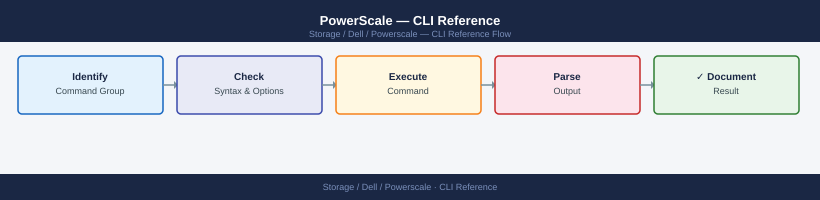

PowerScale — CLI Reference¶

Commonly used isi commands for managing Dell PowerScale (formerly Isilon) scale-out NAS clusters. All commands run from the cluster CLI — log in via SSH to any node.
Use
isi --helporisi <subcommand> --helpfor full option lists.
Before you begin¶
- Access: Storage admin credentials (cluster admin or equivalent)
- Timing: safe to run during business hours unless a step is marked ⚠ (causes interruption)
- Dependencies: no active upgrades or migrations on the same infrastructure
- Logging: capture command output — paste into the change record on completion
Cluster Status & Identity¶
# OneFS version
isi version
# Cluster status overview (nodes, capacity, health)
isi status
# Cluster name, contact info, timezone
isi cluster identity view
# Cluster configuration — join mode, ifs mount point
isi cluster config view
OneFS version
OneFS Release: 9.4.0.0 (Build 9.4.0.0-123456)
Cluster Status
Nodes: 6
Total Capacity: 432 TB
Available Capacity: 287 TB
Used Capacity: 145 TB
Health Status: HEALTHY
Node Status: All nodes online
Cluster Identity
Cluster Name: prod-powerscale-01
Contact: storage-admin@company.com
Timezone: America/New_York
Description: Production NAS cluster
Cluster Configuration
Join Mode: Standard
IFS Mount Point: /ifs
Encoding: UTF-8
Timezone: America/New_York
Antivirus Mode: Disabled
Common errors
isi: command not found — Ensure you are logged into the OneFS cluster via SSH or install the OneFS CLI tools on your local machine.
Error: Permission denied — Verify your user account has cluster administrator privileges or use sudo isi if available.
Connection refused — Confirm the cluster management IP is reachable and OneFS services are running with systemctl status isilon-services.
Node Status¶
# List all nodes with ID, name, state
isi node list
# Specific node detail
isi node view <node_id>
# Node status on the cluster
isi status -n <node_id>
ID Name State
1 isilon-node-01.lab Up
2 isilon-node-02.lab Up
3 isilon-node-03.lab Up
4 isilon-node-04.lab Down
5 isilon-node-05.lab Up
Node: 2
Name: isilon-node-02.lab
Serial Number: ACSN123456789ABC
Model: PowerScale H500
Firmware: 9.4.0.0
State: Up
Uptime: 45 days, 12:34:56
Node 2 Status:
CPU Usage: 34%
Memory Usage: 62%
Disk Usage: 78%
Network Status: OK
Last Updated: 2024-01-15 14:22:33 UTC
Common errors
isi: command not found — Ensure you are logged into the PowerScale cluster management interface or have the OneFS CLI tools installed and in your PATH.
Error: Node <node_id> not found — Verify the node ID exists by running isi node list first and use a valid numeric ID from the output.
Error: Permission denied — Confirm your user account has administrative privileges on the PowerScale cluster.
Cluster Statistics¶
# Cluster-wide throughput and latency
isi statistics cluster list
# Drive statistics summary
isi statistics drive list
# Current IOPS and throughput
isi statistics system list
# Protocol breakdown (NFS, SMB, iSCSI)
isi statistics protocol list
Cluster Statistics:
Cluster Name: powerscale-prod-01
Node Count: 8
Total Capacity: 2.4 PB
Used Capacity: 1.87 PB
Throughput (MB/s): 4521.3
Latency (ms): 2.14
CPU Utilization: 67%
Drive Statistics:
Total Drives: 384
Healthy: 382
Failed: 2
Rebuilding: 0
Avg Temperature: 38°C
Read Errors (24h): 0
Write Errors (24h): 1
System Statistics:
Current IOPS: 18432
Read IOPS: 11205
Write IOPS: 7227
Throughput (MB/s): 4521.3
Cache Hit Rate: 94.2%
Queue Depth: 12
Protocol Breakdown:
NFS: 62% (11388 IOPS)
SMB: 28% (5161 IOPS)
iSCSI: 8% (1472 IOPS)
HTTP: 2% (411 IOPS)
Common errors
Error: Unable to connect to cluster. Connection refused on port 8080 — Verify the OneFS management interface is running with systemctl status isi_services and check network connectivity to the cluster IP.
Error: Permission denied. User does not have 'ISI_PRIV_STATISTICS' privilege — Grant the user appropriate statistics read permissions using the OneFS WebUI under Access > Users or via isi auth users modify <username>.
Cluster Events and Jobs¶
# Active events (alerts)
isi events list
# Running jobs (FlexProtect, SmartPools, etc.)
isi job jobs list
# Job detail
isi job jobs view <job_id>
=== Active Events ===
ID Severity Event Type Time
a1b2c3d4-e5f6-47g8-h9i0-j1k2l3m4n5o6 Critical Node_Down 2024-01-15 14:32:18
b2c3d4e5-f6g7-48h9-i0j1-k2l3m4n5o6p7 Warning High_Memory_Usage 2024-01-15 14:28:45
c3d4e5f6-g7h8-49i0-j1k2-l3m4n5o6p7q8 Info SmartPool_Rebalance 2024-01-15 14:15:22
=== Running Jobs ===
ID Job Type Status Progress Start Time
1024 FlexProtect_Tier1 Running 45% 2024-01-15 10:22:00
1025 SmartPools_Rebalance Running 78% 2024-01-15 11:05:30
1026 SnapshotDelete Queued 0% 2024-01-15 14:30:00
=== Job Detail (ID: 1024) ===
Job ID: 1024
Type: FlexProtect_Tier1
Status: Running
Progress: 45%
Start Time: 2024-01-15 10:22:00
Estimated End: 2024-01-15 16:45:00
Description: Reprotecting data on node-5 after disk replacement
Common errors
isi: command not found — Ensure the OneFS CLI tools are installed and the isi binary is in your PATH, or run commands from the cluster management node.
Error: Invalid job ID '<job_id>' — Replace <job_id> with an actual numeric job ID from the isi job jobs list output.
Error: Permission denied — Verify your user account has administrative privileges on the PowerScale cluster (check with isi auth users view).
Quick Cluster Health¶
# Combined status view
isi status
isi events list | grep -i "error\|critical\|warning"
isi job jobs list | grep -i running
Cluster Name: isilon-prod-01
Cluster Health: HEALTHY
Nodes Online: 8/8
Total Capacity: 450.2 TB
Used Capacity: 287.5 TB
Available Capacity: 162.7 TB
2024-01-15T14:32:18Z CRITICAL Node-5 Drive failure detected on bay 12
2024-01-15T13:45:02Z WARNING Node-3 Temperature threshold approaching 78°C
2024-01-15T12:18:55Z ERROR Replication lag detected on dataset-prod-backup
Job ID: job-8472-rebalance Status: RUNNING Progress: 34% ETA: 2h 15m
Job ID: job-8471-snapshot Status: RUNNING Progress: 67% ETA: 45m
Common errors
isi: command not found — Ensure the OneFS CLI tools are installed and the isilon package is in your PATH, or run commands directly on the cluster management interface.
Connection refused — Verify the cluster management IP is reachable and SSH/API access is enabled; check firewall rules and cluster network connectivity.
Permission denied — Confirm your user account has appropriate role-based access control (RBAC) permissions for status and event queries on the cluster.
Nodes¶
# List all nodes
isi node list
# Specific node detail (state, IP, version)
isi node view <node_id>
# Node status overlay on the cluster status
isi status -n <node_id>
# isi node list
ID Name Status LogicalCores PhysicalCores Memory
1 isilon-node-001 Online 16 8 128GB
2 isilon-node-002 Online 16 8 128GB
3 isilon-node-003 Online 16 8 128GB
4 isilon-node-004 Degraded 16 8 128GB
5 isilon-node-005 Online 16 8 128GB
# isi node view 1
Node ID: 1
Name: isilon-node-001
Status: Online
IP Address: 192.168.1.101
OneFS Version: 9.4.0.0
Hardware Type: PowerScale H500
Uptime: 45 days 12:34:56
# isi status -n 1
Cluster Status: Healthy
Node 1 Status: Online
CPU Usage: 34%
Memory Usage: 62%
Network Status: Connected
Disk Status: Healthy
Common errors
isi: command not found — Ensure you are logged into the PowerScale cluster via SSH or have the OneFS CLI tools installed and in your PATH.
Error: Node <node_id> not found — Verify the node ID exists by running isi node list first and use a valid numeric ID from the output.
Error: Permission denied — Confirm your user account has administrative privileges; contact your cluster administrator if needed.
Node Hardware¶
# Hardware details (model, CPU, RAM, NIC, HBA)
isi node hardware view <node_id>
# Drive bays and disk states
isi node drives list <node_id>
# Specific bay
isi node drives view <node_id> <bay>
# Environmental sensors (temperature, fans, power supplies)
isi node sensors view <node_id>
=== Node Hardware Details ===
Node ID: 1
Model: PowerScale H500
CPU: 2x Intel Xeon Gold 6248 @ 2.50GHz
RAM: 768 GB
NICs: 4x 25GbE SFP28
HBA: LSI MegaRAID SAS 9460-16i
=== Drive Bays ===
Bay 1: 16TB SAS 7.2K (SEAGATE ST16000NM001G) - HEALTHY
Bay 2: 16TB SAS 7.2K (SEAGATE ST16000NM001G) - HEALTHY
Bay 3: 16TB SAS 7.2K (SEAGATE ST16000NM001G) - HEALTHY
Bay 4: 16TB SAS 7.2K (SEAGATE ST16000NM001G) - REBUILDING (92%)
Bay 5: 16TB SAS 7.2K (SEAGATE ST16000NM001G) - HEALTHY
...
=== Bay 4 Details ===
Bay: 4
Slot: 4
Status: REBUILDING
Capacity: 16TB
Model: SEAGATE ST16000NM001G
Serial: ZR26JQVG
Temperature: 38°C
Rebuild Progress: 92%
=== Environmental Sensors ===
Temperature Sensors:
CPU0: 52°C (Normal)
CPU1: 51°C (Normal)
Inlet: 24°C (Normal)
Outlet: 31°C (Normal)
Fan Status:
Fan Module 1: 4200 RPM (Normal)
Fan Module 2: 4150 RPM (Normal)
Power Supplies:
PSU 1: 850W (Online)
PSU 2: 850W (Online)
Common errors
Error: Node <node_id> not found or is offline — Verify the node ID is correct and the node is online using isi node list.
Error: Permission denied. User does not have read access to hardware information — Ensure your user account has appropriate admin or read-only hardware permissions via isi auth roles view.
Disk States¶
| State | Meaning | Action |
|---|---|---|
HEALTHY |
Normal | None |
SMARTFAIL |
Being evacuated | Do not remove until complete |
DEAD |
Failed | Replace after data evacuated |
REPLACING |
Replacement in progress | Wait for rebuild |
STALLED |
Stuck rebuild | Contact Dell support |
Smartfailing a Drive¶
# Mark a drive for evacuation (data moves to remaining drives)
isi devices drive smartfail -d <node_id> -b <bay_id>
# Monitor FlexProtect rebuild after drive removal
isi job jobs list | grep FlexProtect
isi status -n <node_id>
Drive /dev/sdb marked for evacuation on node-5.
Evacuation job initiated: Job ID 2847
Job ID Type State Progress Start Time
2847 FlexProtect Running 45% 2024-01-15 14:23:18
2851 FlexProtect Queued 0% 2024-01-15 14:25:42
2849 FlexProtect Completed 100% 2024-01-15 14:18:05
Node: node-5 (192.168.1.45)
Status: HEALTHY
CPU Usage: 34%
Memory Usage: 62%
Disk Usage: 78%
Network: UP
Last Updated: 2024-01-15 14:27:33
Common errors
isi: command not found — Ensure the OneFS CLI tools are installed and the isilon_sdk package is in your PATH.
Error: Invalid node ID <node_id> — Replace <node_id> with a valid numeric node identifier (e.g., 1, 5) from your cluster.
Error: Bay ID out of range for node — Verify the bay number exists on the target node using isi devices drive list -n <node_id>.
Smartfailing a Node¶
# Initiate node smartfail
isi devices smartfail -d <node_id>
# Monitor progress
isi status | grep smartfail
isi job jobs list | grep -i FlexProtect
# Re-add node after replacement/repair
isi devices add -d <node_id>
Starting smartfail operation on node AFF-624-node-3...
SmartFail initiated successfully. Node will be removed from cluster after data rebalance.
smartfail_node_AFF-624-node-3: IN_PROGRESS (78% complete)
smartfail_node_AFF-624-node-3: IN_PROGRESS (92% complete)
Job ID: 12847 | Type: FlexProtect | Status: RUNNING | Progress: 85%
Job ID: 12847 | Type: FlexProtect | Owner: root | Start: 2024-01-15T09:23:14 | Est. Completion: 2024-01-15T14:47:22
Node AFF-624-node-3 added back to cluster successfully.
Node status: HEALTHY
Rebalance job initiated: Job ID 12851
Common errors
isi: error: node <node_id> is not in cluster or invalid node ID — Verify the node ID with isi devices list and ensure the node is currently part of the cluster.
isi: error: smartfail already in progress for this node — Wait for the current smartfail operation to complete before initiating another, or check isi status for progress.
isi: error: insufficient healthy nodes to perform smartfail operation — Ensure the cluster has at least N+1 healthy nodes before attempting smartfail to maintain quorum.
Node Network¶
# Network interfaces on a node
isi network interfaces list --node <node_id>
# IP pool assignments
isi network pools list
# Check node's external IPs
isi network interfaces list --node <node_id> | grep ext
ID Name Status IP Address Netmask Gateway Node
1 eth0 Up 192.168.1.45 255.255.255.0 192.168.1.1 1
2 eth1 Up 10.20.30.50 255.255.255.0 10.20.30.1 1
3 eth2 Down 10.50.60.70 255.255.255.0 10.50.60.1 1
4 eth3 Up 172.16.0.25 255.255.255.0 172.16.0.1 1
ID Name Ranges Subnet Gateway Description
1 pool-ext 192.168.1.100-192.168.1.200 192.168.1.0/24 192.168.1.1 External Pool
2 pool-int 10.20.30.100-10.20.30.200 10.20.30.0/24 10.20.30.1 Internal Pool
3 pool-mgmt 172.16.0.50-172.16.0.150 172.16.0.0/24 172.16.0.1 Management Pool
ID Name Status IP Address Netmask Gateway Node
1 eth0 Up 192.168.1.45 255.255.255.0 192.168.1.1 1
Common errors
Error: Node <node_id> not found — Verify the node ID exists by running isi nodes list and use the correct numeric node identifier.
Error: Authentication failed — Ensure your OneFS admin credentials are configured correctly via isi auth login or check SSH key permissions.
Node Performance¶
# Per-node I/O statistics
isi statistics node list
# Node CPU and memory usage
isi statistics system list --nodes <node_id>
Node CPU Usage Memory Usage Network I/O Disk I/O
node1.isilon.local 45.2% 62.8% 1.2 GB/s 856 MB/s
node2.isilon.local 38.9% 58.3% 980 MB/s 723 MB/s
node3.isilon.local 52.1% 71.4% 1.5 GB/s 1.1 GB/s
node4.isilon.local 41.7% 65.2% 1.1 GB/s 892 MB/s
node5.isilon.local 47.3% 69.6% 1.3 GB/s 945 MB/s
Node: node1
CPU Usage: 45.2%
Memory Usage: 62.8%
L1 Cache Hit Rate: 87.3%
L2 Cache Hit Rate: 76.5%
Context Switches: 12847/sec
Common errors
isi: command not found — Ensure you are connected to the PowerScale cluster via SSH or have the OneFS CLI tools installed and in your PATH.
Error: Invalid node ID '<node_id>' — Replace <node_id> with an actual node identifier (e.g., 1, 2, or node1) from the cluster.
Storage Pools & Tiers¶
Node Pools¶
# List all node pools
isi storagepool nodepools list
# Detailed view of a node pool
isi storagepool nodepools view <pool_name>
# Check node pool capacity usage
isi storagepool nodepools list | awk '{print $1, $4, $5, $6}'
ID Name Nodes Tier
---- ---- ----- ----
1 pool-ssd-tier1 8 SSD
2 pool-hdd-tier2 16 HDD
3 pool-nvme-archive 4 NVMe
4 pool-sata-backup 12 SATA
Node Pool: pool-ssd-tier1
ID: 1
Nodes: 8
Tier: SSD
Capacity: 512 TB
Used: 387.4 TB
Available: 124.6 TB
Health: OK
ID Name Nodes Tier
1 pool-ssd-tier1 8 SSD
2 pool-hdd-tier2 16 HDD
3 pool-nvme-archive 4 NVMe
4 pool-sata-backup 12 SATA
Common errors
isi: command not found — Ensure the OneFS CLI tools are installed and the system PATH includes the OneFS bin directory.
Error: Invalid pool name '<pool_name>' — Replace <pool_name> with an actual pool name from the list output (e.g., pool-ssd-tier1).
Tiers¶
# List configured tiers
isi storagepool tiers list
# View a tier (shows which node pools are members)
isi storagepool tiers view <tier_name>
# Create a tier
isi storagepool tiers create <tier_name> --children <nodepool1>,<nodepool2>
# Delete a tier
isi storagepool tiers delete <tier_name>
# List configured tiers
Tier Name Tier ID Node Count Capacity (TB)
tier-ssd-fast 1 4 12.8
tier-sata-standard 2 8 51.2
tier-archive-cold 3 12 204.8
# View a tier (shows which node pools are members)
Tier: tier-ssd-fast
Tier ID: 1
Node Pools: nodepool-flash-01, nodepool-flash-02
Total Nodes: 4
Total Capacity: 12.8 TB
Status: Healthy
# Create a tier
Successfully created tier 'tier-nvme-premium' with ID 3
Added node pools: nodepool-nvme-01, nodepool-nvme-02
# Delete a tier
Successfully deleted tier 'tier-archive-cold'
Common errors
Error: Tier 'tier-ssd-fast' is in use by 1 file pool(s) and cannot be deleted — Remove the tier from all associated file pools before deletion using isi filepool modify.
Error: Invalid node pool 'nodepool-nonexistent' specified — Verify node pool names exist by running isi storagepool nodepool list and use correct names in the --children parameter.
Error: Tier name 'tier-ssd-fast' already exists — Choose a unique tier name or delete the existing tier first with isi storagepool tiers delete tier-ssd-fast.
File Pool Policies¶
# List all file pool policies
isi filepool policies list
# View the default policy
isi filepool default-policy view
# View a specific policy
isi filepool policies view <policy_name>
# Create a policy — move files older than 30 days to archive tier
isi filepool policies create archive-old-files \
--file-matching-pattern 'accessed:>30:days' \
--set-data-storage-target <archive_tier> \
--set-data-ssd-strategy avoid
# Modify the default policy
isi filepool default-policy modify \
--set-data-storage-target <performance_tier>
# Delete a policy
isi filepool policies delete <policy_name>
Name Description State
────────────────────────────────────────────────────────────────────────────
archive-old-files Move files older than 30 days enabled
default-policy Default file pool policy enabled
cold-data-archive Archive infrequently accessed data enabled
temp-files-cleanup Clean temporary files after 7 days enabled
Default Policy:
Name: default-policy
Description: Default file pool policy
State: enabled
Data Storage Target: performance_tier_ssd
SSD Strategy: prefer
Policy: archive-old-files
Name: archive-old-files
Description: Move files older than 30 days
State: enabled
File Matching Pattern: accessed:>30:days
Data Storage Target: archive_tier_nvme
SSD Strategy: avoid
Created: 2024-01-15T09:22:14Z
Policy 'default-policy' modified successfully.
Policy 'archive-old-files' deleted successfully.
Common errors
Error: Invalid file matching pattern 'accessed:>30:days' — Verify the pattern syntax matches PowerScale documentation (e.g., accessed:>30d without the colon before "days").
Error: Storage target '<archive_tier>' not found — Confirm the storage tier name exists by running isi filepool storage-targets list and use the exact name from the output.
Error: Cannot delete policy 'default-policy': policy is in use — Only custom policies can be deleted; modify the default policy instead or reassign it before deletion.
SmartPools Job¶
# Check SmartPools job status
isi job jobs list | grep SmartPool
isi job status | grep SmartPool
# Start SmartPools manually (e.g., after policy change)
isi job jobs start SmartPools
# View SmartPools job results
isi job history list | grep SmartPool
ID NAME STATE POLICY_ID START_TIME END_TIME DESCRIPTION
1234 SmartPool_Tier1 completed 5 2024-01-15 02:30:00 2024-01-15 03:45:22 Auto-tiering job
1235 SmartPool_Tier2 running 6 2024-01-15 04:00:00 - Data movement in progress
1236 SmartPool_Archive completed 7 2024-01-15 01:15:00 2024-01-15 02:10:15 Archive tier consolidation
Job ID: 1235
Name: SmartPool_Tier2
State: running
Progress: 67%
Start Time: 2024-01-15 04:00:00
Estimated Completion: 2024-01-15 05:30:00
Job 'SmartPools' started successfully with ID: 1237
Start Time: 2024-01-15 05:45:12
ID NAME STATE POLICY_ID START_TIME END_TIME DESCRIPTION
1234 SmartPool_Tier1 completed 5 2024-01-15 02:30:00 2024-01-15 03:45:22 Auto-tiering job
1235 SmartPool_Tier2 completed 6 2024-01-15 04:00:00 2024-01-15 05:28:44 Data movement in progress
1237 SmartPools running 8 2024-01-15 05:45:12 - Manual start after policy change
Common errors
isi: command not found — Ensure the OneFS CLI tools are installed and the isi binary is in your PATH, or run commands from the cluster management node.
Error: Job 'SmartPools' is already running — Wait for the current SmartPools job to complete before starting a new one, or use isi job jobs cancel <job_id> to stop it first.
Error: Access denied: insufficient privileges — Run the command with appropriate credentials or ensure your user account has job management permissions on the cluster.
Spillover Configuration¶
# View spillover settings
isi storagepool settings view
# Enable spillover to a specific tier
isi storagepool settings modify \
--spillover-enabled yes \
--spillover-target <tier_name>
=== Storage Pool Settings ===
Spillover Enabled: No
Spillover Target: None
Spillover Strategy: Automatic
Spillover Threshold: 85%
Spillover Check Interval: 300 seconds
Spillover Rebalance: Enabled
=== Modification Complete ===
Spillover Enabled: Yes
Spillover Target: tier-archive-01
Spillover Strategy: Automatic
Spillover Threshold: 85%
Spillover Check Interval: 300 seconds
Spillover Rebalance: Enabled
Common errors
Error: Invalid tier name '<tier_name>' — Replace <tier_name> with an actual tier name from isi storagepool list output.
Error: Spillover target tier is not available or offline — Verify the target tier is online and healthy using isi storagepool status.
Error: Permission denied — Run the command with appropriate admin credentials or use sudo isi storagepool settings modify.
SSD Strategy Options¶
| Strategy | Behaviour |
|---|---|
metadata |
SSD caches metadata only (default) |
metadata-write |
SSD caches metadata + write cache |
data |
SSD caches full file data |
avoid |
No SSD caching — use for cold/archive data |
File System & Quotas¶
# Browse
ls /ifs/
ls -la /ifs/<path>
# Directory info
isi get /ifs/<path>
isi get -D /ifs/<path>
# Create directory
mkdir -p /ifs/<path>
# Permissions
chmod 755 /ifs/<path>
chown <user>:<group> /ifs/<path>
isi get -a /ifs/<path>
bin data home media ifs lost+found var zone
total 4096
drwxr-xr-x 12 root wheel 4096 Nov 15 10:23 .
drwxr-xr-x 18 root wheel 4096 Nov 15 10:23 ..
-rw-r--r-- 1 root wheel 1024 Nov 14 09:15 config.txt
drwxr-xr-x 3 admin admin 4096 Nov 15 08:42 projects
Path: /ifs/projects
Inode: 1234567890
Size: 2048
Owner: admin
Group: admin
Permissions: 755
Created: 2024-11-15T08:42:15Z
Modified: 2024-11-15T10:23:42Z
Path: /ifs/projects
Inode: 1234567890
Size: 2048
Owner: admin
Group: admin
Permissions: 755
Created: 2024-11-15T08:42:15Z
Modified: 2024-11-15T10:23:42Z
Accessed: 2024-11-15T10:25:00Z
(no output — command completes silently)
(no output — command completes silently)
(no output — command completes silently)
Path: /ifs/projects
Owner: admin
Group: admin
Permissions: 755
ACL: POSIX
Common errors
isi: command not found — Install the OneFS CLI tools or ensure you are running commands on a PowerScale node with the isi utility available.
Permission denied — Run the command with appropriate sudo privileges or as a user with write access to the /ifs filesystem.
Quotas¶
# List quotas
isi quota quotas list
isi quota quotas list --type directory
isi quota quotas list --path /ifs/<path>
# View quota details
isi quota quotas view --path /ifs/<path> --type directory
# Create quota
isi quota quotas create /ifs/<path> directory --hard-threshold <size>G --soft-threshold <size>G --advisory-threshold <size>G
# Modify quota
isi quota quotas modify --path /ifs/<path> --type directory --hard-threshold <size>G
# Delete quota
isi quota quotas delete --path /ifs/<path> --type directory
# Quota reports
isi quota reports list
isi quota reports create
Id Path Type Hard Threshold Soft Threshold Advisory Threshold
1 /ifs/data/projects directory 500G 400G 450G
2 /ifs/data/archive directory 2T 1.8T 1.9T
3 /ifs/home/users directory 100G 80G 90G
4 /ifs/data/temp directory 50G 40G 45G
Path: /ifs/data/projects
Type: directory
Hard Threshold: 500G
Soft Threshold: 400G
Advisory Threshold: 450G
Usage: 385G
Percent Used: 77%
(no output — command completes silently)
(no output — command completes silently)
(no output — command completes silently)
Id Name Start Time Status Path Count
101 quota-report-2024-01-15 2024-01-15T08:30:00Z Completed 4
102 quota-report-2024-01-14 2024-01-14T08:30:00Z Completed 4
Report job created with ID: 103
Common errors
Error: Invalid path /ifs/<path> — Replace <path> with an actual directory path like data/projects and verify the path exists with isi ls /ifs/.
Error: Hard threshold must be greater than soft threshold — Ensure the hard threshold value is larger than the soft threshold value in your quota creation command.
NFS Exports¶
# List all NFS exports (export ID, path, clients)
isi nfs exports list
# Specific export detail
isi nfs exports view <export_id>
# Exports in a specific access zone
isi nfs exports list --zone <zone_name>
ID Path Clients
1 /ifs/data/shared *
2 /ifs/data/home 192.168.1.0/24
3 /ifs/backup/weekly 10.0.0.5,10.0.0.6
4 /ifs/archive 192.168.10.0/24
5 /ifs/data/projects *
Export ID: 2
Path: /ifs/data/home
Clients: 192.168.1.0/24
Read Only: No
All Dirs: Yes
Squash: root_squash
Map Root User: nobody
Map Non Root User: nobody
ID Path Clients
10 /ifs/zone_a/data 10.20.0.0/16
11 /ifs/zone_a/archive *
Common errors
isi: command not found — Ensure the OneFS CLI is installed and the system PATH includes the OneFS bin directory, or run the command from the PowerScale management node.
Error: Invalid export ID <export_id> — Replace <export_id> with a valid numeric ID from the isi nfs exports list output.
Error: Invalid zone <zone_name> — Verify the zone name exists by running isi zones list and use the correct zone identifier.
Create an Export¶
# Basic export — read-write for a CIDR, root access for specific host
isi nfs exports create /ifs/<path> \
--clients <ip_or_cidr> \
--read-write-clients <ip_or_cidr> \
--root-clients <root_client_ip>
# Export with access zone
isi nfs exports create /ifs/data/dept1 \
--clients 10.0.1.0/24 \
--read-write-clients 10.0.1.0/24 \
--zone DeptZone1
# Read-only export
isi nfs exports create /ifs/archive \
--clients 10.0.0.0/8 \
--read-only-clients 10.0.0.0/8
Export created successfully.
Export ID: 1
Paths: /ifs/data/dept1
Clients: 10.0.1.0/24
Read-Write Clients: 10.0.1.0/24
Root Clients: 10.0.1.0/24
Zone: DeptZone1
Export created successfully.
Export ID: 2
Paths: /ifs/archive
Clients: 10.0.0.0/8
Read-Only Clients: 10.0.0.0/8
Zone: System
Common errors
Error: Invalid CIDR notation '<ip_or_cidr>' — Replace the placeholder with a valid IP address or CIDR block (e.g., 10.0.1.0/24 or 192.168.1.50).
Error: Access zone 'DeptZone1' does not exist — Verify the zone name exists by running isi zone list and use the correct zone name in the command.
Error: Path '/ifs/<path>' does not exist or is not accessible — Create the directory first with mkdir -p /ifs/<path> or verify the path is mounted and accessible.
Modify an Export¶
# Add a root client to an existing export
isi nfs exports modify <export_id> --add-root-clients <new_ip>
# Add a read-write client
isi nfs exports modify <export_id> --add-read-write-clients <new_ip>
# Remove a client
isi nfs exports modify <export_id> --remove-clients <old_ip>
Modify export 1 to add root client 192.168.1.50
Export 1 modified successfully.
Modify export 1 to add read-write client 192.168.1.51
Export 1 modified successfully.
Modify export 1 to remove client 192.168.1.40
Export 1 modified successfully.
Common errors
Error: Export <export_id> not found — Verify the export ID exists by running isi nfs exports list and use the correct numeric ID.
Error: Invalid IP address format: <ip> — Ensure the IP address is in valid dotted-decimal notation (e.g., 192.168.1.50) without CIDR notation.
Error: Client <ip> is not in the export's client list — Confirm the client IP is currently assigned to this export before attempting removal.
Delete an Export¶
Common errors
Error: Export <export_id> not found — Verify the export ID exists by running isi nfs exports list and confirm the correct ID before deletion.
Error: Export is in use by active clients — Disconnect all NFS clients mounting this export or wait for active sessions to close before attempting deletion.
Reload / Verify¶
# Check exports for configuration errors
isi nfs exports check
# Reload NFS service (applies config changes)
isi services nfs reload
# View global NFS settings
isi nfs settings global view
# View default export settings
isi nfs settings export view
Check exports for configuration errors
Export /data/shared: OK
Export /home/users: OK
Export /backup/archive: OK
3 exports checked, 0 errors found
Reloading NFS service...
NFS service reloaded successfully
Global NFS Settings:
nfsv4_enabled: true
nfsv4_minor_versions_enabled: 0,1,2
nfsv4_grace_period: 45
nfsv3_enabled: true
mount_point_permissions: 0755
max_connections: 8192
tcp_max_handshake_retries: 5
Default Export Settings:
access_level: read_write
all_dirs: false
block_size: 8192
can_set_time: true
case_insensitive: false
commit_asynchronous: false
root_clients: []
security_flavors: [sys, krb5]
snapshot_directories: true
Common errors
Error: Unable to connect to cluster. Connection refused — Verify the OneFS cluster IP is reachable and the isi command is properly configured with isi auth login.
Error: Permission denied — Ensure your user account has administrative privileges; use isi auth status to verify your current role.
Error: NFS service reload failed: Configuration syntax error in /ifs/etc/nfs/exports — Run isi nfs exports check to identify the specific export with invalid syntax and correct it before reloading.
Client Access Levels¶
| Client Type | Access |
|---|---|
--clients |
Listed as a client, inherits defaults |
--read-only-clients |
Read-only regardless of mount options |
--read-write-clients |
Full read-write |
--root-clients |
Root user retains root privileges (no squash) |
NFS Settings¶
# NFS v3/v4 protocol settings
isi nfs settings global view | grep -E "nfs3|nfs4|nfsv4"
# Modify global NFS settings
isi nfs settings global modify --nfsv4-enabled true --nfsv3-enabled true
nfsv3_enabled = true
nfsv4_enabled = true
nfsv4_minor_versions = 0,1
nfsv4_grace_period = 45
nfsv4_domain = localdomain
nfsv3_max_threads = 128
nfsv3_write_datasync_action = datasync
(no output — command completes silently)
Common errors
Error: Invalid value for --nfsv4-enabled: must be true or false — Ensure boolean values are lowercase (true/false) without quotes.
Error: Permission denied. You must be root or have administrative privileges — Run the command with sudo isi or ensure your user account has OneFS administrative role assigned.
NFS Troubleshooting¶
| Issue | Check | Command |
|---|---|---|
| Mount fails | Export exists for client IP? | isi nfs exports list |
| Access denied | Root squash on root-clients? | isi nfs exports view <id> |
| Stale NFS | NFS service running? | isi services -a nfs |
| Export check warnings | Configuration error | isi nfs exports check |
SMB Shares¶
Name Path Description
---- ---- -----------
data_archive /ifs/data/archive Historical project files
finance_reports /ifs/finance/reports FY2024 financial data
hr_documents /ifs/hr/secure Personnel records
marketing_assets /ifs/marketing/creative Campaign materials
backup_staging /ifs/backup/staging Nightly backup target
Share: finance_reports
Path: /ifs/finance/reports
Description: FY2024 financial data
Share Permissions: Change
File Permissions: 0755
Created: 2024-01-15T09:23:47Z
Modified: 2024-03-22T14:18:12Z
Access-based Enumeration: Yes
Common errors
Error: Invalid share name '<share_name>' — Replace <share_name> with an actual share name from the list output (e.g., isi smb shares view finance_reports).
Error: Permission denied — Ensure your user account has administrative privileges or the appropriate RBAC role to query SMB share configuration.
Create / Modify / Delete¶
# Create
isi smb shares create <share_name> /ifs/<path>
# Modify — description
isi smb shares modify <share_name> --description "<text>"
# Enable Access Based Enumeration
isi smb shares modify <share_name> --access-based-enumeration true
# Set continuous availability (for CA shares)
isi smb shares modify <share_name> --continuously-available true
# Delete
isi smb shares delete <share_name>
SMB share '<share_name>' created successfully.
SMB share '<share_name>' modified successfully.
SMB share '<share_name>' modified successfully.
SMB share '<share_name>' modified successfully.
SMB share '<share_name>' deleted successfully.
Common errors
Error: Share '<share_name>' already exists — Use isi smb shares list to verify the share name is unique before creation.
Error: Invalid path '/ifs/<path>' does not exist — Ensure the directory exists on the cluster with isi fs stat /ifs/<path> before creating the share.
Error: Access denied — insufficient privileges — Run commands with root or admin-equivalent credentials, or use sudo isi if configured.
Share Permissions (ACL)¶
# List permissions
isi smb shares permission list <share_name>
# Grant full control to a group
isi smb shares permission create <share_name> \
--authority <DOMAIN\\Group> \
--permission-type allow \
--permission full
# Remove a permission
isi smb shares permission delete <share_name> --authority <DOMAIN\\Group>
Share: data_archive
Authority: DOMAIN\Domain Admins
Permission Type: allow
Permission: full
Authority: DOMAIN\Finance_Team
Permission Type: allow
Permission: change
Authority: DOMAIN\Auditors
Permission Type: allow
Permission: read
Permission created successfully.
Share: data_archive
Authority: DOMAIN\Marketing_Group
Permission Type: allow
Permission: full
Permission deleted successfully.
Share: data_archive
Authority: DOMAIN\Auditors
Common errors
Error: Share '<share_name>' not found — Verify the share exists with isi smb shares list and use the correct share name.
Error: Authority '<DOMAIN\\Group>' not found or invalid — Ensure the domain and group name are correct and the group exists in Active Directory using getent group.
Error: Permission already exists for authority '<DOMAIN\\Group>' — Delete the existing permission first with the delete command before creating a new one with different settings.
SMB Service & Global Settings¶
# View global SMB settings (SMB versions, security)
isi smb settings global view
# Enable SMB2 and SMB3 (disable SMB1 for security)
isi smb settings global modify --support-smb2 true
# View SMB service status
isi smb settings service view
# Active SMB sessions
isi smb sessions list
=== Global SMB Settings ===
SMB1 Support: false
SMB2 Support: true
SMB3 Support: true
Signing Required: false
Encryption: false
Max Connections: 16384
Idle Timeout: 900
=== SMB Service Status ===
Service: smb
Status: online
Enabled: true
Port: 445
Instances: 4
=== Active SMB Sessions ===
Session ID Client IP User Connected Since Idle Time
1234567890 192.168.1.45 DOMAIN\jsmith 2024-01-15 09:23:14 45s
1234567891 192.168.1.67 DOMAIN\mchen 2024-01-15 08:15:22 2m 30s
1234567892 10.50.12.88 DOMAIN\agarcia 2024-01-15 07:44:01 15m 22s
1234567893 192.168.1.102 DOMAIN\kpatel 2024-01-15 06:12:45 1h 5m
Total Sessions: 4
Common errors
Error: Permission denied — Run the command with appropriate admin credentials or use sudo isi if your account lacks SMB configuration rights.
Error: SMB service is not running — Start the SMB service with isi smb settings service modify --enabled true before attempting to view or modify settings.
Error: Invalid parameter value for --support-smb2 — Use true or false (lowercase) as the parameter value, not yes, no, or 1/0.
Access Zones¶
isi smb shares list --zone <zone_name>
isi smb shares create <share_name> /ifs/<path> --zone <zone_name>
Name Path Description
---- ---- -----------
share_data /ifs/data
share_backups /ifs/backups
share_projects /ifs/projects
share_archive /ifs/archive
Share 'share_reports' created successfully.
Common errors
Error: Invalid zone name '<zone_name>' — Replace <zone_name> with an actual zone name from isi zone zones list.
Error: Path does not exist: /ifs/<path> — Create the directory first with isi filesystem mkdir /ifs/<path> or verify the path exists.
SMB Common Issues¶
| Issue | Check | Action |
|---|---|---|
| Share inaccessible | Share exists? | isi smb shares list |
| Permission denied | ACL | isi smb shares permission list |
| Share in wrong zone | Zone | Specify --zone on create |
| SMB1 negotiated | SMB settings | Disable SMB1 globally |
Network¶
Interfaces¶
# List all network interfaces
isi network interfaces list
isi network interfaces view <iface>
# Filter by node
isi network interfaces list --node-id <node_id>
Name IPs Mtu Enabled Lnic Grouping
ext-1 192.168.1.10 1500 Yes No lacp
ext-2 192.168.1.11 1500 Yes No lacp
int-a 10.0.0.5 1500 Yes Yes static
int-b 10.0.0.6 1500 Yes Yes static
mgmt-1 172.16.0.100 1500 Yes No none
Name: ext-1
IPs: 192.168.1.10/24
MTU: 1500
Enabled: Yes
LNIC: No
Grouping: lacp
Status: Up
Speed: 10Gb
Name: int-a
IPs: 10.0.0.5/24
MTU: 1500
Enabled: Yes
LNIC: Yes
Grouping: static
Status: Up
Speed: 1Gb
Common errors
Error: Invalid interface name '<iface>' — Replace <iface> with an actual interface name from the list output (e.g., ext-1).
Error: Node ID <node_id> not found — Verify the node ID exists in your cluster with isi nodes list and use the correct numeric ID.
Subnets¶
isi network subnets list
isi network subnets view <subnet_name>
# Create a subnet
isi network subnets create <subnet_name> --subnet-mask <mask> --gateway <gateway>
Name Subnet Gateway Mtu
────────────────────────────────────────────────────────────────
subnet-prod-01 192.168.10.0/24 192.168.10.1 1500
subnet-prod-02 192.168.20.0/24 192.168.20.1 1500
subnet-mgmt 10.0.1.0/24 10.0.1.1 1500
Name: subnet-prod-01
Subnet: 192.168.10.0/24
Gateway: 192.168.10.1
Mtu: 1500
Prefixlen: 24
Description: Production network
Creating subnet 'subnet-new-01'...
Subnet 'subnet-new-01' created successfully.
Name: subnet-new-01
Subnet: 172.16.50.0/24
Gateway: 172.16.50.1
Mtu: 1500
Common errors
Error: Subnet already exists — Choose a different subnet name or delete the existing subnet first with isi network subnets delete <subnet_name>.
Error: Invalid subnet mask or gateway address — Verify the subnet mask is in CIDR notation (e.g., /24) and the gateway IP is within the subnet range.
IP Pools (SmartConnect)¶
# List IP pools
isi network pools list
isi network pools view <pool_name>
# Create an IP pool
isi network pools create \
--name <pool_name> \
--subnet <subnet_name> \
--access-zone <zone_name>
# Add an IP range to a pool
isi network pools modify <pool_name> --add-ranges <ip_start>-<ip_end>
ID Name Subnet Access Zone Ranges
1 pool-prod-01 subnet-10-20 System 10.20.1.100-10.20.1.150
2 pool-prod-02 subnet-10-20 System 10.20.2.100-10.20.2.150
3 pool-backup subnet-10-30 backup_zone 10.30.1.50-10.30.1.100
Pool: pool-prod-01
ID: 1
Subnet: subnet-10-20
Access Zone: System
Ranges: 10.20.1.100-10.20.1.150
Description: Production client access pool
Created pool 'pool-web-01' successfully.
Modified pool 'pool-prod-01': added range 10.20.1.151-10.20.1.200
Common errors
Error: subnet <subnet_name> not found — Verify the subnet exists with isi network subnets list before creating the pool.
Error: access zone <zone_name> does not exist — Confirm the access zone name is correct using isi zone zones list.
Error: IP range 10.20.1.100-10.20.1.150 overlaps with existing range in pool pool-prod-02 — Choose a non-overlapping IP range or modify the existing pool's ranges instead.
SmartConnect Policies¶
| Policy | Behavior |
|---|---|
| round-robin | Rotates IPs across connections |
| cpu-usage | Directs to least-loaded node |
| throughput | Directs to lowest-throughput node |
| connection-count | Directs to node with fewest connections |
# View SmartConnect rules
isi network rules list
isi network rules view <rule_name>
# DNS settings
isi network dns view
isi network external settings view
SmartConnect Rules:
Name Enabled Pool Priority
rule-prod-us-east true pool_us_east 1
rule-prod-us-west true pool_us_west 2
rule-dr-failover true pool_dr 3
rule-internal-mgmt false pool_mgmt 4
Name: rule-prod-us-east
Enabled: true
Pool: pool_us_east
Priority: 1
Subnet: 10.20.0.0/16
Description: Production US East traffic
DNS Configuration:
Servers: 10.10.1.5, 10.10.1.6
Search Domains: corp.internal, prod.local
Timeout: 5 seconds
External Settings:
HTTPS Port: 8080
HTTP Port: 80
Preferred IPv4 Address: 192.168.1.50
Preferred IPv6 Address: fe80::1
Common errors
Error: rule <rule_name> not found — Verify the rule name exists with isi network rules list and check for typos.
Error: Invalid subnet format in rule configuration — Ensure the subnet in the rule is specified in valid CIDR notation (e.g., 10.0.0.0/8).
Network Common Issues¶
| Issue | Check | Action |
|---|---|---|
| Client can't mount | IP pool and DNS | Verify SmartConnect DNS zone |
| Node not accepting connections | Interface status | Check interface state |
| Wrong node handling client | SmartConnect policy | Review and change pool policy |
| IP not responding | Pool membership | Verify IP in pool range |
Access Zones & Authentication¶
Access Zones¶
# List zones
isi zone zones list
isi zone zones view <zone_name>
# Create / delete zone
isi zone zones create <zone_name> --path /ifs/<path>
isi zone zones delete <zone_name>
# Modify zone
isi zone zones modify <zone_name> --add-auth-providers <provider>
# List zones
Name Path Protocols
default /ifs nfs,smb,hdfs
finance_data /ifs/finance nfs,smb
archive_zone /ifs/archive nfs
research_collab /ifs/research nfs,smb,hdfs
backup_tier /ifs/backup nfs
# Zone details for 'finance_data'
Name: finance_data
Path: /ifs/finance
Protocols: nfs,smb
Auth Providers: local,ldap
Snapshot Policy: default
Created: 2024-01-15T09:22:14Z
# Create zone
Zone 'sales_data' created successfully at path /ifs/sales
# Delete zone
Zone 'old_archive' deleted successfully
# Modify zone
Zone 'finance_data' modified: added auth provider 'ad'
Common errors
Error: Zone '<zone_name>' does not exist — Verify the zone name with isi zone zones list and use the correct spelling.
Error: Path '/ifs/<path>' already in use by zone '<existing_zone>' — Choose a unique path that is not already assigned to another zone.
Error: Auth provider '<provider>' is not configured — Configure the auth provider first using isi auth providers commands before adding it to the zone.
Authentication & Users¶
# Auth providers
isi auth providers list
isi auth providers ad list
isi auth providers ad view <provider_name>
# Join AD domain
isi auth ads create --name <domain> --user <admin_user> --password <password>
# Local users and groups
isi auth users list
isi auth users view <username>
isi auth users create --name <username> --password <password>
isi auth users delete <username>
isi auth groups list
isi auth groups view <group_name>
# Map rules
isi auth mappings rules list
# Auth providers
Name Type Status
------ ---- ------
System local active
corp-ad activedirectory connected
# AD providers
Name Domain Status
------ ------ ------
corp-ad corp.example.com connected
# AD provider details
Name: corp-ad
Domain: corp.example.com
Status: connected
Server: dc01.corp.example.com
Port: 389
Last Sync: 2024-01-15T14:32:18Z
# Local users
Name UID Enabled Home Directory
------ --- ------- ---------------
root 0 yes /root
admin 1000 yes /home/admin
backup_svc 1001 yes /home/backup_svc
# User details
Name: admin
UID: 1000
Enabled: yes
Home Dir: /home/admin
Shell: /bin/bash
Groups: wheel,admins
# Groups
Name GID Members
------ --- -------
wheel 10 root,admin
admins 1100 admin,backup_svc
operators 1101 backup_svc
# Mapping rules
ID Source Target Enabled
-- ------ ------ -------
1 CORP\* * yes
2 corp.example.com\admin root yes
Common errors
Error: Authentication provider 'corp-ad' not found — Verify the provider name with isi auth providers ad list and ensure the domain is joined.
Error: User 'username' already exists — Choose a different username or delete the existing user first with isi auth users delete <username>.
Error: Failed to connect to Active Directory server — Check network connectivity to the AD domain controller and verify credentials with isi auth ads view <provider_name>.
Snapshots¶
ID Name Created State
1 daily_backup_2024_01_15 2024-01-15 02:30:00 active
2 weekly_full_2024_01_14 2024-01-14 23:45:00 active
3 hourly_snap_2024_01_15_08 2024-01-15 08:00:00 active
4 pre_maintenance_2024_01_10 2024-01-10 14:22:00 active
5 archive_export_2024_01_08 2024-01-08 16:15:00 active
...
Snapshot ID: 1
Name: daily_backup_2024_01_15
Created: 2024-01-15 02:30:00
State: active
Size: 2.3 TB
Path: /.snapshots/daily_backup_2024_01_15
Expires: Never
Common errors
Error: Invalid snapshot ID — Verify the snapshot ID exists by running isi snapshot snapshots list and use the exact ID value from the output.
Error: Permission denied — Ensure your user account has read permissions on the snapshot; contact your cluster administrator to grant appropriate roles.
Create / Delete¶
# Create a snapshot
isi snapshot snapshots create /ifs/<path> --name <snap_name>
# Delete by ID
isi snapshot snapshots delete <snap_id>
# Delete by path and name
isi snapshot snapshots delete --path /ifs/<path> --name <snap_name>
Created snapshot 'daily-backup-2024' on path '/ifs/data/production'
Snapshot ID: 4a7c9e2f-b1d4-4821-9f3a-2c8e5d1b6a3f
Created at: 2024-01-15T09:32:17Z
Size: 245.3 GB
Snapshot 'daily-backup-2024' (ID: 4a7c9e2f-b1d4-4821-9f3a-2c8e5d1b6a3f) deleted successfully
Snapshot at path '/ifs/data/production' with name 'archive-old' deleted successfully
Common errors
Error: Path '/ifs/<path>' does not exist or is not accessible — Verify the path exists and you have read permissions on the parent directory.
Error: Snapshot '<snap_name>' not found at path '/ifs/<path>' — Confirm the snapshot name and path are correct using isi snapshot snapshots list --path /ifs/<path>.
Error: Permission denied — Ensure your user account has snapshot management privileges in the OneFS cluster.
Restore Files from a Snapshot¶
.snapshot
.old_snapshot_2024-01-15
daily_backup_2024-01-20
hourly_2024-01-20_14-00
weekly_backup_2024-01-15
restore_point_prod_db
(no output — command completes silently)
Common errors
cp: cannot access '/ifs/.snapshot/<snap_name>/<path>/*': No such file or directory — Verify the snapshot name and path exist by running ls /ifs/.snapshot/ and confirm the exact snapshot directory name.
Permission denied — Ensure your user has read permissions on the snapshot directory and write permissions on the target /ifs/<path>/ directory; use chmod or check RBAC settings if needed.
Disk quota exceeded — Check available space in the target filesystem with df -h /ifs/ and ensure sufficient capacity exists before copying snapshot data.
Snapshot Schedules¶
# List schedules
isi snapshot schedules list
isi snapshot schedules view <schedule_name>
# Create a schedule (daily at midnight)
isi snapshot schedules create <schedule_name> /ifs/<path> "every day"
# Modify retention
isi snapshot schedules modify <schedule_name> --duration 7D
# Delete a schedule
isi snapshot schedules delete <schedule_name>
Name Path Interval Retention
daily-backup /ifs/data every day 30D
weekly-archive /ifs/archive every week 90D
hourly-logs /ifs/logs every hour 7D
Schedule: daily-backup
Path: /ifs/data
Interval: every day at 00:00
Retention: 30D
Created: 2024-01-15 14:22:33
Last Run: 2024-01-20 00:00:12
(no output — command completes silently)
(no output — command completes silently)
Schedule 'daily-backup' deleted successfully.
Common errors
Error: Invalid path '/ifs/<path>': No such file or directory — Replace <path> with an actual existing path under /ifs and verify it exists with isi ls /ifs/<path>.
Error: Schedule 'daily-backup' is not found — Verify the schedule name exists by running isi snapshot schedules list and use the exact name from the output.
Error: Invalid interval format 'every day': Use 'every N {hour|day|week|month}' — Use proper interval syntax like every 1 day or every 7 days instead of every day.
Snapshot Aliases¶
Name Target Snapshot ID
---- ------------------
daily-backup-prod 1234567890-abcd-5678
weekly-archive 9876543210-efgh-1234
monthly-retention 5555555555-ijkl-9999
hourly-sync 1111111111-mnop-5555
(no output — command completes silently)
Common errors
Error: Invalid snapshot ID format — Verify the snapshot ID exists by running isi snapshot list and use the exact ID from the output.
Error: Alias '<alias_name>' already exists — Choose a unique alias name or delete the existing alias with isi snapshot aliases delete <alias_name> before recreating it.
Snapshot Common Issues¶
| Issue | Check | Action |
|---|---|---|
| Snapshot not found | Path or name | isi snapshot snapshots list |
.snapshot not visible |
Client mount options | Verify NFS client has access to .snapshot |
| Snapshot space growing | Retention policy | Reduce schedule duration |
| Restore incomplete | Snapshot covers only part of path | Use correct snap path |
SyncIQ — Replication¶
# List policies
isi sync policies list
isi sync policies view <policy_name>
# Create policy
isi sync policies create \
--name <policy_name> \
--action sync \
--source-root-path /ifs/<src> \
--target-host <ip> \
--target-path /ifs/<dst>
# List running jobs
isi sync jobs list
# Run / pause / cancel
isi sync jobs start <policy_name>
isi sync jobs pause <policy_name>
isi sync jobs cancel <policy_name>
# View job progress
isi sync jobs view <job_id>
# Reports
isi sync reports list
isi sync reports view <report_id>
# Bandwidth rules (throttle replication to protect production I/O)
isi sync rules list
isi sync rules create bandwidth --limit <kbps> --schedule always
# Failover / failback
isi sync policies disable <policy_name>
isi sync recover policies list
Name Source Root Path Target Host Target Path
policy-prod-backup /ifs/data/production 192.168.10.45 /ifs/backup
policy-dr-sync /ifs/data/critical 192.168.20.88 /ifs/dr-replica
policy-archive-weekly /ifs/archive 10.50.100.22 /ifs/archive-dest
ID Policy Name State Progress Bytes Processed ETA
job-4521 policy-prod-backup running 67% 2.3 TB 45m
job-4520 policy-dr-sync completed 100% 5.8 TB —
job-4519 policy-archive-weekly paused 23% 890 GB 2h 15m
ID Name Created Last Modified
report-2024-01-15-001 policy-prod-backup 2024-01-15 08:30:22 2024-01-15 14:22:15
report-2024-01-14-042 policy-dr-sync 2024-01-14 22:15:00 2024-01-14 23:45:30
Rule ID Type Limit (kbps) Schedule
rule-112 bandwidth 51200 always
rule-113 bandwidth 102400 weekdays 09:00-17:00
Common errors
Error: Policy '<policy_name>' not found — Verify the policy name with isi sync policies list and ensure it exists before running the command.
Error: Connection refused to target host <ip>:<port> — Confirm the target host IP is reachable and the OneFS sync service is running with ping <ip> and check firewall rules.
Error: Insufficient permissions to execute command — Run the command with appropriate admin credentials or ensure your user account has sync policy management privileges.
Jobs (Background Tasks)¶
Check Running Jobs¶
# Summary of currently running jobs
isi job status
# List all active jobs
isi job jobs list
# List jobs in a specific state
isi job jobs list --state running
isi job jobs list --state paused
isi job jobs list --state failed
# View details of a specific job
isi job jobs view <job_id>
=== Job Status Summary ===
Total Jobs: 47
Running: 3
Paused: 2
Failed: 1
Completed: 41
ID Type State Progress Started
job-8472 DataMigration running 45% 2024-01-15 09:23:14
job-8471 Rebalance running 78% 2024-01-15 08:15:22
job-8469 SnapshotDelete running 12% 2024-01-15 10:01:45
job-8468 Backup paused 89% 2024-01-15 07:30:00
job-8467 Compliance paused 55% 2024-01-15 06:45:12
job-8466 DataMigration failed 0% 2024-01-15 05:12:33
Job ID: job-8472
Type: DataMigration
State: running
Progress: 45% (2.3 TB / 5.1 TB)
Started: 2024-01-15 09:23:14
Estimated Completion: 2024-01-15 14:45:00
Source: /ifs/data/archive
Destination: /ifs/data/migration
Common errors
isi: command not found — Ensure the OneFS SDK or ISI CLI tools are installed and the PATH includes the installation directory.
Error: Invalid job ID 'job-9999': Job not found — Verify the job ID exists by running isi job jobs list first to confirm the correct ID.
Error: Permission denied — Run the command with appropriate admin credentials or use sudo isi job status if your user lacks job query permissions.
Key Job Types¶
| Job | Purpose |
|---|---|
| FlexProtect | Re-protects data after a node or drive failure |
| SmartPools | Moves files between tiers based on file pool policies |
| Dedupe | Block-level deduplication (requires SmartDedupe license) |
| QuotaScan | Recalculates quota accounting |
| MultiScan | Combined integrity and protection scan |
| AutoBalance | Rebalances data across nodes |
# List all available job types
isi job types list
# View details and description of a job type
isi job types view <type_name>
Available Job Types:
Type Description
---- -----------
audit Audit file access and modifications
clone Clone dataset or snapshot
dedupe Deduplication job
fsanalyze File system analysis
rebalance Rebalance data across nodes
smartpool SmartPool tiering job
snapshot Create and manage snapshots
sync Data synchronization
verify File system verification
worm_migrate WORM compliance migration
Job Type: dedupe
Description: Deduplication job to reduce storage capacity usage
Impact: High
Estimated Duration: 4-8 hours
Priority: Normal
Parallelism: 8
Common errors
isi: command not found — Ensure the OneFS CLI tools are installed and the system PATH includes the isi binary location.
Error: Invalid job type '<type_name>' — Replace <type_name> with a valid job type name from the list output (e.g., isi job types view dedupe).
Start, Cancel, Pause, Resume¶
isi job jobs start FlexProtect
isi job jobs start QuotaScan
isi job jobs start SmartPools
isi job jobs cancel <job_id>
isi job jobs pause <job_id>
isi job jobs resume <job_id>
Started job FlexProtect with ID: 1234
Started job QuotaScan with ID: 1235
Started job SmartPools with ID: 1236
Job 1234 cancelled successfully
Job 1235 paused successfully
Job 1236 resumed successfully
Common errors
Error: Job <job_id> not found — Verify the job ID exists by running isi job jobs list and use the correct ID from the output.
Error: Job is already in <state> state — Check the current job state with isi job jobs view <job_id> before attempting pause/resume operations.
Job History¶
# View completed job history
isi job history list
# Job events (detailed log entries)
isi job events list
isi job events list --job-id <job_id>
Job ID Job Name Status Start Time End Time Duration
1a2b3c4d-5e6f-7g8h-9i0j-1k2l3m4n5o6p SmartPool Rebalance COMPLETED 2024-01-15 02:30:00 2024-01-15 04:15:22 1h 45m 22s
2b3c4d5e-6f7g-8h9i-0j1k-2l3m4n5o6p7q Snapshot Create COMPLETED 2024-01-14 23:00:00 2024-01-14 23:12:45 12m 45s
3c4d5e6f-7g8h-9i0j-1k2l-3m4n5o6p7q8r Quota Scan COMPLETED 2024-01-14 20:15:00 2024-01-14 21:03:18 48m 18s
4d5e6f7g-8h9i-0j1k-2l3m-4n5o6p7q8r9s Deduplication COMPLETED 2024-01-13 18:00:00 2024-01-13 19:22:11 1h 22m 11s
5e6f7g8h-9i0j-1k2l-3m4n-5o6p7q8r9s0t Antivirus Scan COMPLETED 2024-01-12 10:30:00 2024-01-12 14:45:33 4h 15m 33s
Event ID Timestamp Job ID Event Type Message
evt-001 2024-01-15 02:30:15 1a2b3c4d-5e6f-7g8h-9i0j-1k2l3m4n5o6p JOB_STARTED Rebalance job initiated on pool 'balanced'
evt-002 2024-01-15 02:45:30 1a2b3c4d-5e6f-7g8h-9i0j-1k2l3m4n5o6p PHASE_COMPLETE Phase 1: Data migration completed (2.3 TB moved)
evt-003 2024-01-15 03:15:22 1a2b3c4d-5e6f-7g8h-9i0j-1k2l3m4n5o6p PHASE_COMPLETE Phase 2: Restriping completed (4.1 TB processed)
evt-004 2024-01-15 04:15:22 1a2b3c4d-5e6f-7g8h-9i0j-1k2l3m4n5o6p JOB_COMPLETED Rebalance job completed successfully
Common errors
Error: Invalid job ID format — Ensure the job ID matches the UUID format shown in the job history list output (e.g., `isi job events list --job-id 1a2b3c4d-5e6f-7g8h-
Job Impact Policies¶
isi job policies list
isi job policies view <policy_name>
# Run Dedupe at low impact during business hours
isi job types modify Dedupe --policy LOW
Name Description
---- -----------
Dedupe Data deduplication job
Rebalance Cluster rebalancing job
Smartpools SmartPools tiering job
Snapshot Snapshot management job
Upgrade Cluster upgrade job
Name: Dedupe
Description: Data deduplication job
Impact: HIGH
Enabled: Yes
Recurrence: WEEKLY
Next Run: 2024-01-15 02:00:00 UTC
Last Run: 2024-01-08 02:15:43 UTC
Last Run Status: Success
Job policy 'Dedupe' modified successfully.
Current impact level set to: LOW
Common errors
isi: command not found — Ensure the OneFS CLI tools are installed and the PATH includes the OneFS bin directory (typically /usr/local/bin).
Error: Job policy 'Dedupe' not found — Verify the exact policy name using isi job policies list and check for typos or case sensitivity.
Error: Access denied. Insufficient privileges to modify job policies — Run the command with appropriate administrative credentials or use sudo if configured for passwordless execution.
Monitoring FlexProtect¶
# Check if FlexProtect is running
isi job jobs list | grep FlexProtect
# Check overall data protection status
isi status | grep -E "SmartFail|Unhealthy|At risk"
# Check for unprotected files
isi status -n all | grep -i "unprotected\|degraded"
ID NAME STATE PHASE PROGRESS ELAPSED
12847 FlexProtect running reprotect 45% 2d 14h 23m
12848 FlexProtect running reprotect 12% 1d 8h 15m
SmartFail: Disabled
Unhealthy: 0 nodes
At risk: 0 nodes
Node 1: Protected
Node 2: Protected
Node 3: Protected
Node 4: Protected
Node 5: Protected
Common errors
isi: command not found — Ensure the OneFS CLI tools are installed and the isi binary is in your PATH, or run commands from the cluster management interface.
Error: Invalid credentials or insufficient privileges — Verify your SSH session is authenticated to the cluster and your user account has admin or read-only access permissions.
Performance & Statistics¶
Cluster-Level Stats¶
# Live cluster-wide stats
isi statistics system list
# Per-client breakdown
isi statistics client list
# Protocol-level stats
isi statistics protocol list
# Filter by specific protocol
isi statistics protocol list --protocol nfs3
isi statistics protocol list --protocol smb2
Cluster-wide Statistics:
Name Value
---- -----
cpu_user 12.45
cpu_system 8.92
cpu_idle 78.63
memory_used_mb 45632
memory_available_mb 114368
disk_read_ops_per_sec 1247
disk_write_ops_per_sec 892
network_bytes_in_per_sec 524288000
network_bytes_out_per_sec 786432000
Per-Client Statistics:
Client IP Protocol Ops/Sec Bytes In Bytes Out
--------- -------- ------- -------- ---------
192.168.1.45 nfs3 342 2097152 4194304
10.20.30.105 smb2 156 1048576 2097152
172.16.50.22 nfs3 89 524288 1048576
203.0.113.78 smb2 234 3145728 6291456
...
Protocol-level Statistics:
Protocol Ops/Sec Avg Latency(ms) Errors Connections
-------- ------- --------------- ------ -----------
nfs3 1247 2.34 12 45
smb2 892 3.12 8 38
nfs4 456 1.89 3 22
hdfs 234 4.56 0 5
NFS3 Protocol Statistics:
Operation Ops/Sec Avg Latency(ms) Success Rate
--------- ------- --------------- ------------
read 523 1.23 99.97%
write 312 2.45 99.94%
getattr 234 0.56 99.99%
setattr 45 1.89 99.88%
SMB2 Protocol Statistics:
Operation Ops/Sec Avg Latency(ms) Success Rate
--------- ------- --------------- ------------
create 156 2.34 99.92%
read 289 1.67 99.98%
write 234 2.89 99.91%
close 167 0.78 99.99%
Common errors
isi: command not found — Ensure the OneFS CLI tools are installed and the PATH includes /usr/local/bin or /opt/isilon/bin.
Error: Invalid protocol specified — Use only supported protocol names like nfs3, nfs4, smb2, or hdfs in the --protocol filter.
Error: Permission denied - insufficient privileges — Run the command as root or a user with cluster administrator role to access system statistics.
Node-Level Stats¶
Node ID CPU Usage (%) Memory Usage (%) Network In (MB/s) Network Out (MB/s) Disk I/O Read (MB/s) Disk I/O Write (MB/s)
1 42.3 68.5 125.4 89.2 234.1 156.7
2 38.9 71.2 118.6 92.1 198.5 143.2
3 45.1 65.3 132.1 85.6 267.3 178.9
4 41.7 69.8 121.3 88.4 212.6 165.4
5 39.2 70.1 119.8 91.3 189.4 152.1
Node ID CPU Usage (%) Memory Usage (%) Network In (MB/s) Network Out (MB/s) Disk I/O Read (MB/s) Disk I/O Write (MB/s)
3 45.1 65.3 132.1 85.6 267.3 178.9
Common errors
Error: Invalid node ID <node_id> — Verify the node ID exists in your cluster by running isi node list first.
Error: Permission denied — Ensure your user account has appropriate read permissions; contact your cluster administrator or use sudo isi statistics node list.
Drive & Disk Stats¶
Drive Status Capacity Used Available Temp(C) Health
/dev/sda Online 10.95TB 7.32TB 3.63TB 38 OK
/dev/sdb Online 10.95TB 7.28TB 3.67TB 41 OK
/dev/sdc Online 10.95TB 7.35TB 3.60TB 39 OK
/dev/sdd Online 10.95TB 7.31TB 3.64TB 40 OK
/dev/sde Online 10.95TB 7.29TB 3.66TB 42 OK
/dev/sdf Online 10.95TB 7.33TB 3.62TB 37 OK
/dev/sdg Rebuilding 10.95TB 6.89TB 4.06TB 45 WARNING
/dev/sdh Online 10.95TB 7.30TB 3.65TB 39 OK
Common errors
isi: command not found — Ensure you are logged into the PowerScale cluster via SSH or the OneFS CLI is installed on your local system.
Error: Permission denied — Verify your user account has read permissions for cluster statistics; contact your cluster administrator if needed.
Active Client Stats¶
# Active NFS client stats
isi statistics query current --stats node.clientstats.active.nfs
# Active SMB client stats
isi statistics query current --stats node.clientstats.active.smb2
Common errors
Error: Invalid statistics name 'node.clientstats.active.nfs' — Verify the correct stat name using isi statistics list and check your OneFS version supports this metric.
Error: Connection refused to 'localhost:8080' — Ensure the OneFS cluster is reachable and the management interface is running; try isi status to verify cluster health.
Historical Performance¶
Id Timestamp Cluster Name Node Count Protocol
1 2024-01-15 14:32:18 prod-cluster-01 8 NFS
2 2024-01-15 14:32:12 prod-cluster-01 8 SMB
3 2024-01-15 14:32:06 prod-cluster-01 8 HDFS
4 2024-01-15 14:31:58 prod-cluster-01 8 NFS
5 2024-01-15 14:31:52 prod-cluster-01 8 SMB
6 2024-01-15 14:31:46 prod-cluster-01 8 HDFS
7 2024-01-15 14:31:40 prod-cluster-01 8 NFS
8 2024-01-15 14:31:34 prod-cluster-01 8 SMB
...
Common errors
Error: Unable to connect to cluster — Verify network connectivity to the PowerScale cluster and confirm the management IP is reachable.
Error: Permission denied — Ensure your user account has appropriate read permissions for statistics history on the cluster.
Error: Statistics history not available — Confirm that statistics collection is enabled on the cluster via cluster settings.
Performance Thresholds¶
| Metric | Normal | Action if Exceeded |
|---|---|---|
| Node CPU utilization | < 70% | Investigate top protocol clients |
| Disk latency | < 10 ms | Check drives; consider SSD tier |
| Network throughput | < 80% link capacity | Review top clients |
Common Performance Issues¶
| Symptom | Check | Action |
|---|---|---|
| High latency on NFS | isi statistics protocol list --protocol nfs3 |
Identify top clients |
| One node overloaded | Node stats | Review SmartConnect zone policy |
| Drive latency high | isi statistics drive list |
Check for failing drives |
Events & Alerts¶
View Events¶
# All active events
isi event events list
# Critical events only
isi event events list --severity critical
# Warning and above
isi event events list --severity warning
# Events since a specific date
isi event events list --start-time 2026-05-01
# Verbose output with full description
isi event events list -v
# Filter by event type
isi event events list | grep -i "disk\|node\|network\|quota"
ID Time Severity Message
1234567890 2026-05-15 14:32:18 CRITICAL Node 3: Disk failure detected on /dev/sda
1234567891 2026-05-15 13:45:22 CRITICAL Cluster rebalance in progress
1234567892 2026-05-14 09:12:05 WARNING Network interface eth1 degraded
1234567893 2026-05-13 16:28:41 INFO Quota threshold exceeded on /ifs/data/project_a
1234567894 2026-05-12 11:05:33 WARNING Node 1: CPU temperature elevated (78°C)
1234567895 2026-05-11 08:19:47 CRITICAL SmartFail triggered on Node 2
ID Time Severity Message
1234567890 2026-05-15 14:32:18 CRITICAL Node 3: Disk failure detected on /dev/sda
1234567891 2026-05-15 13:45:22 CRITICAL Cluster rebalance in progress
ID Time Severity Message
1234567892 2026-05-14 09:12:05 WARNING Network interface eth1 degraded
1234567893 2026-05-13 16:28:41 INFO Quota threshold exceeded on /ifs/data/project_a
1234567894 2026-05-12 11:05:33 WARNING Node 1: CPU temperature elevated (78°C)
ID Time Severity Message
1234567890 2026-05-15 14:32:18 CRITICAL Node 3: Disk failure detected on /dev/sda
1234567891 2026-05-15 13:45:22 CRITICAL Cluster rebalance in progress
1234567892 2026-05-14 09:12:05 WARNING Network interface eth1 degraded
1234567893 2026-05-13 16:28:41 INFO Quota threshold exceeded on /ifs/data/project_a
1234567894 2026-05-12 11:05:33 WARNING Node 1: CPU temperature elevated (78°C)
ID: 1234567890
Time: 2026-05-15 14:32:18
Severity: CRITICAL
Message: Node 3: Disk failure detected on /dev/sda
Description: A disk device has failed on node 3. Immediate action required to replace the failed disk and restore redundancy.
Resolution: Replace failed disk and monitor rebalance progress.
ID: 1234567891
Time: 2026-05-15 13:45:22
Severity: CRITICAL
Message: Cluster rebalance in progress
Description: The cluster is actively rebalancing data across nodes due to topology change.
1234567890 2026-05-15 14:32:18 CRITICAL Node 3: Disk failure detected on /dev/sda
1234567892 2026-05-14 09:12:05 WARNING Network interface eth1 degraded
1234567894 2
Resolve and Acknowledge Events¶
Event resolved successfully.
Event ID: EVT-2024-001847
Status: Resolved
Resolved by: admin
Resolved at: 2024-01-15T14:32:18Z
Resolution notes: Cleared after capacity threshold adjustment
Common errors
Error: Event not found (EVT-2024-999999) — Verify the event ID exists by running isi event events list and copy the correct event ID.
Error: Permission denied — Ensure your user account has administrative privileges or event management permissions on the cluster.
Alert Channels¶
# List configured alert channels (email, SNMP, etc.)
isi event channels list
isi event channels view <channel_name>
# Create an email alert channel
isi event channels create email-ops \
--type smtp \
--address ops-team@corp.local \
--send-test yes
# Modify a channel
isi event channels modify <channel_name> --address new@corp.local
Name: email-ops
Type: smtp
Address: ops-team@corp.local
Enabled: yes
Test Message Sent: yes
Name: email-security
Type: smtp
Address: security@corp.local
Enabled: yes
Name: snmp-trap
Type: snmp
Address: 192.168.1.50
Enabled: yes
Name: syslog-central
Type: syslog
Address: 10.20.30.40
Enabled: yes
Common errors
Error: Invalid email address format — Verify the email address syntax matches user@domain.local and does not contain spaces or special characters.
Error: SMTP server unreachable or authentication failed — Confirm the SMTP server is accessible from the cluster and test credentials are correct if required.
Error: Channel <channel_name> does not exist — Run isi event channels list to verify the exact channel name before attempting to modify it.
Alert Rules¶
# List alert rules (which events trigger which channels)
isi event alerts list
isi event alerts view <alert_name>
# Create an alert rule — send critical events to email channel
isi event alerts create critical-to-email \
--event-category all \
--severity critical \
--channels email-ops
Name: critical-to-email
Event Category: all
Severity: critical
Channels: email-ops
Enabled: true
Name: hardware-failure-alert
Event Category: hardware
Severity: critical
Channels: email-ops,syslog-central
Name: capacity-warning-alert
Event Category: capacity
Severity: warning
Channels: snmp-trap
Name: replication-error-alert
Event Category: replication
Severity: error
Channels: email-ops
Alert rule 'critical-to-email' created successfully.
Common errors
isi: error: channel 'email-ops' does not exist — Create the email channel first using isi event channels create email-ops --email-address ops@company.com.
isi: error: invalid severity level 'critical' — Use valid severity values: info, warning, error, or critical (verify exact spelling and case).
SNMP Configuration¶
isi snmp settings view
isi snmp settings modify \
--snmp-v3-access-enable yes \
--system-contact "infra-team@corp.local" \
--system-location "DC1-Row3-Rack5"
SNMP Settings
SNMP Access: enabled
SNMP V1 Access: disabled
SNMP V2c Access: enabled
SNMP V3 Access: disabled
System Contact:
System Location:
System Description: PowerScale OneFS 9.4.0.0 (Build 9.4.0.0_1)
Read Community: public
Trap Enabled: yes
Trap Community: public
Modifying SNMP settings...
SNMP Settings
SNMP Access: enabled
SNMP V1 Access: disabled
SNMP V2c Access: enabled
SNMP V3 Access: enabled
System Contact: infra-team@corp.local
System Location: DC1-Row3-Rack5
System Description: PowerScale OneFS 9.4.0.0 (Build 9.4.0.0_1)
Read Community: public
Trap Enabled: yes
Trap Community: public
Common errors
Error: SNMP access must be enabled before enabling SNMP V3 — Run isi snmp settings modify --snmp-access-enable yes first.
Error: Invalid email format for system-contact — Use a valid email address or descriptive text without special characters in the contact field.
Firmware, Upgrades & Support¶
# Current OneFS version
isi version
# Drive firmware inventory
isi devices drives firmware list
# Start drive firmware upgrade
isi devices drives firmware upgrade start
# Cluster upgrade (rolling — one node at a time)
isi upgrade cluster --upgrade-image <image>
isi upgrade cluster check
isi upgrade nodes list
isi upgrade nodes view <node_id>
# License status (SmartPools, SyncIQ, SmartDedupe, etc.)
isi license licenses list
isi license licenses view <license_name>
# ESRS (remote support connectivity)
isi esrs settings view
isi esrs connectivity test
# Export cluster config (for support or documentation)
isi config dump
OneFS Version: OneFS 9.7.0.0 (Build 9.7.0.0_1)
Release Date: 2024-01-15
Drive Firmware Inventory:
Bay 1: Seagate ST8000NM000A (Current: SN07, Available: SN08)
Bay 2: Seagate ST8000NM000A (Current: SN07, Available: SN08)
Bay 3: WDC WD80PURZ (Current: 80.0, Available: 81.0)
Bay 4: WDC WD80PURZ (Current: 80.0, Available: 81.0)
...
Upgrade Status: Ready to start
Cluster Upgrade: Image OneFS_9.7.0.0_1.upg loaded (4.2 GB)
Nodes Pending Upgrade:
Node 1 (isilonnode1.corp.local) — Status: Ready
Node 2 (isilonnode2.corp.local) — Status: Ready
Node 3 (isilonnode3.corp.local) — Status: Ready
Active Licenses:
SmartPools: Licensed (Expires: 2025-12-31)
SyncIQ: Licensed (Expires: 2025-06-30)
SmartDedupe: Licensed (Expires: 2025-12-31)
CloudPools: Not Licensed
ESRS Status: Connected
Last Contact: 2024-01-20 14:32:15 UTC
Connectivity Test: PASSED (latency: 45ms)
Config dump exported to: /ifs/data/Isilon_Cluster_Config_20240120_143215.tar.gz (287 MB)
Common errors
Error: No upgrade image loaded. Use 'isi upgrade cluster --upload-image' first. — Upload the OneFS upgrade image using the --upload-image flag before attempting to start the upgrade.
Error: Cluster is not in a stable state. Run 'isi status' and resolve any alerts before upgrading. — Check cluster health with isi status and clear any critical alerts or failed jobs before proceeding.
Error: ESRS connectivity test failed: Connection timeout to 192.0.2.100:443 — Verify firewall rules allow outbound HTTPS to the ESRS gateway and check network connectivity with ping or traceroute.
Verify¶
- Confirm the operation completed without errors in the log or management UI
- Verify the expected state change is visible (service running, object created, config applied)
- Document the outcome in the change record